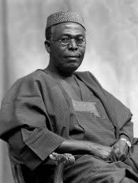

Chief Obafemi Awolowo
1909-1987
The man who created a past that has now become a future
Obafemi Awolowo was born in Ikenné, Western State, Nigeria, on March 6, 1909. He received his early education in the mission schools of Ikenné, Abeokuta, and Ibadan. Often he worked at odd jobs to raise money for tuition fees, and his entrepreneurial spirit continued to express itself in the various careers which he subsequently sampled: journalist, teacher, clerk, moneylender, taxidriver, produce broker.

Chief Obafemi Awolowo, Premier of the then Western Region
Below are some highlights of Awolowo's life:
- 1909 - Born in Ikenné, Western State, Nigeria
- 1920 - received his early education in the mission schools of Ikenné, Abeokuta, and Ibadan
- 1944 - University of London correspondence course for the bachelor of commerce degree.
- 1945 - In 1945 he wrote his first book, Path to Nigerian Freedom, in which he was highly critical of British policies of indirect administration and called for rapid moves toward self-government and Africanization of administrative posts in Nigeria
- 1947 - His greatest ambition, however, was to study law, which he undertook in London from 1944 to 1946, when he was called to the bar. Returning to Nigeria in 1947, he developed a thriving practice as a barrister in Ibadan.
- 1950 - Awolowo founded and organized the Action Group political party in Western Nigeria to participate in the Western Regional elections of 1951. The Action Group's platform called for immediate termination of British rule in Nigeria and for development of various public welfare programs, including universal primary education, increase of health services in rural areas, diversification of the Western Regional economy, and democratization of local governments.
- 1954 - He became the first premier of the Western Region, on which occasion he was awarded an honorary chieftaincy. During his tenure as leader and premier, he held the regional ministerial portfolios of local government, finance, and economic planning. He was also chairman of the Regional Economic Planning Commission.